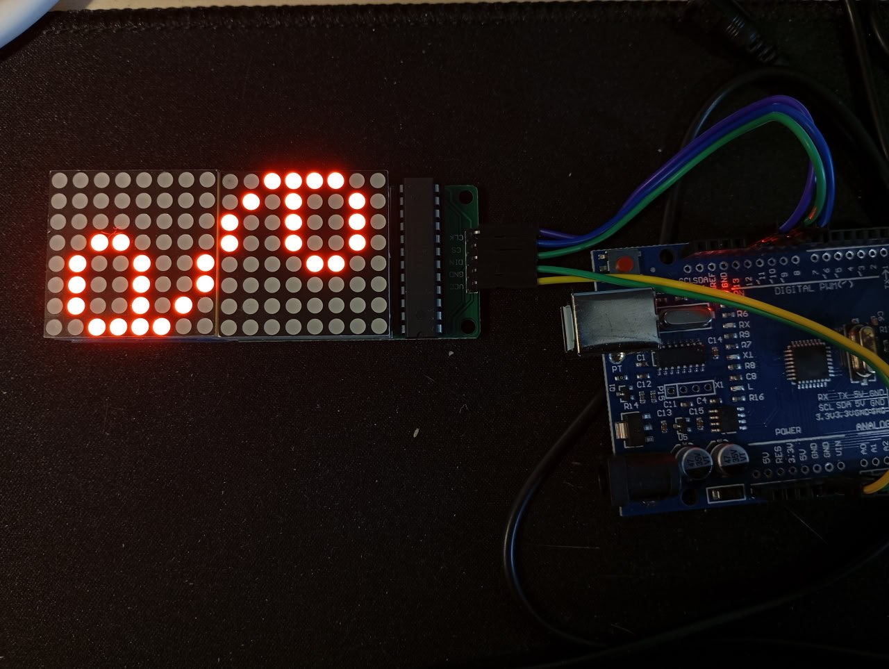
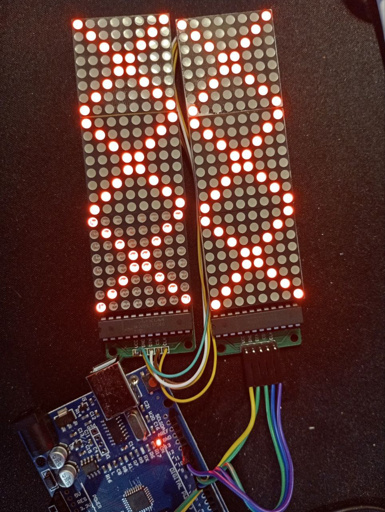

2025-06-12
09:01 Небольшой сайдэффект от изучения МК. Написал десктопного сапера
https://github.com/bakineugene/mineswipper_c/
12:33 https://github.com/bakineugene/avr_max7219/
Наковырял код из https://embeddedthoughts.com/2016/04/19/scrolling-text-on-the-8x8-led-matrix-with-max7219-drivers/
Теперь можно пробовать что-то рисовать на “экране”.
Пока что я спаял экран из двух матриц. Но поскольку платки у меня разнотипные - вывод на одном типе повернут на 180 градусов Придется это скомпенсировать потом в коде
#tetris_c #max7219 #avr

11:38
Теперь экран состоит из 6 матриц
#tetris_c #max7219 #avr

13:32
Как это работает:
Есть три пина Пин тактирования Пин “включения обмена данными” Пин данных
После включения обмена данными первый max7219 в цепочке принимает одну команду - два байта. Исполняет ее, а все остальное, что будет передано в этой сессии обмена данными он пересылает дальше
Поэтому обновлять за один заход можно по одному столбцу в каждой из матриц (это как раз одна команда)
В коде, который я взял за основу зачем-то отправляется noop NUM_DEVICES -1 раз и только одна команда отправляется по делу.
void displayBuffer()
{
for(uint8_t i = 0; i < NUM_DEVICES; i++) // For each cascaded device
{
for(uint8_t j = 1; j < 9; j++) // For each column
{
SLAVE_SELECT;
for(uint8_t k = 0; k < i; k++) // Write Pre No-Op code
writeWord(0x00, 0x00);
writeWord(j, buffer[j + i*8 - 1]); // Write column data from buffer
for(uint8_t k = NUM_DEVICES-1; k > i; k--) // Write Post No-Op code
writeWord(0x00, 0x00);
SLAVE_DESELECT;
}
}
}По факту можно переписать вот так
void displayBufferNew()
{
for(uint8_t j = 1; j < 9; j++) // For each column
{
SLAVE_SELECT;
for(uint8_t i = 0; i < NUM_DEVICES; i++) writeWord(j, buffer[j + i*8 - 1]);
SLAVE_DESELECT;
}
}P.S. Ну и SLAVE_SELECT, SLAVE_DESELECT без “()” скобочек, указывающих на, то что тут-произойдет какое-то действие - глаза режет.
#tetris_c #max7219 #avr
14:28
Немного порефакторил - в принципе с этим уже можно работать
https://github.com/bakineugene/avr_max7219/commit/8b3c211e5bd2a33022c66e81dff41db4444783ea
#tetris_c #max7219 #avr